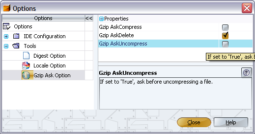

The Gzip Module allows to compress, and uncompress files using the GZIP format.
You can compress any file, the compressed file name will have the file suffix '.gz'.
You can uncompress files having the file suffix .gz;
the uncompressed file name has no file suffix .gz.
At the end of the compressing, and uncompressing task, you may delete the original file.
The Gzip Module offers following user selectable options:
The following screenshot shows the options available:
